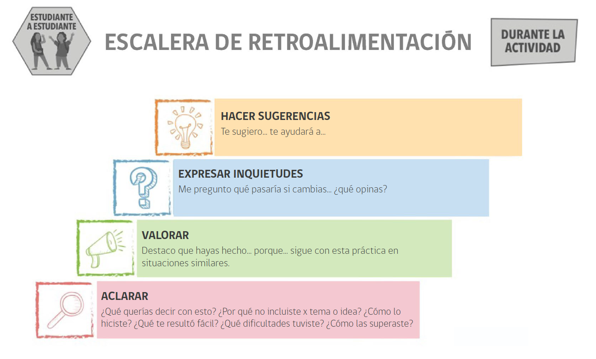

Unidad 3
Geogebra
Retroalimentación

Presentaciones
- La retroalimentación es a través del formulario de google en ucursos.
- Se evalúa a todos salvo a tu grupo siguiente.
- Al grupo siguiente se le retroalimenta de forma oral.
- Los “me gusta, me pregunto y te sugiero” se enviarán a los equipos después, no lo dejen en blanco ni coloquen respuestas vagas.